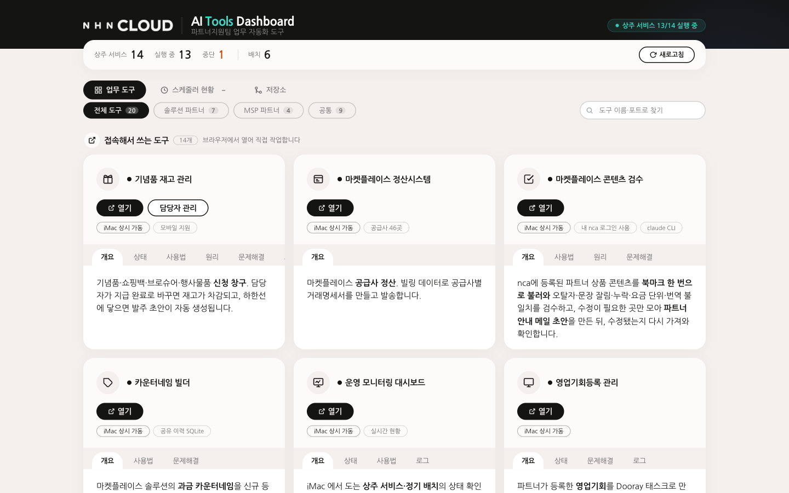
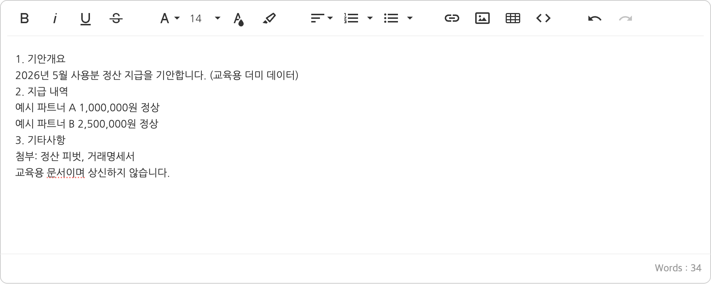
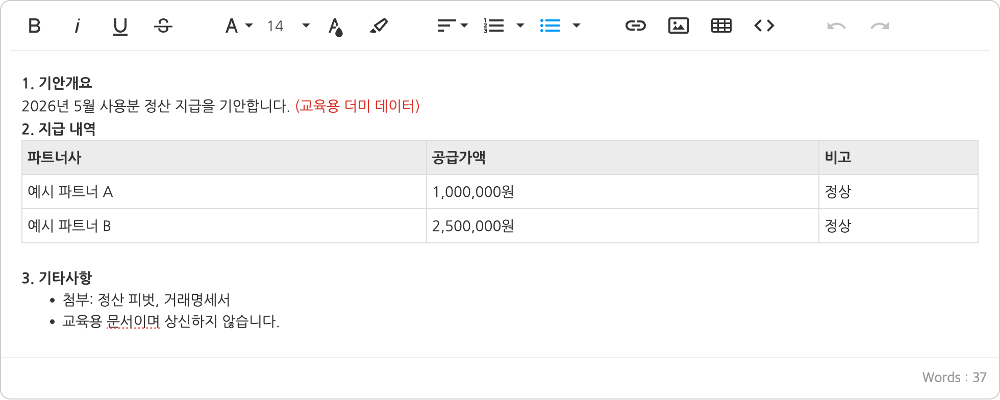

HANDS-ON LAB · 4시간
실전편 · Claude Code 핸즈온
#비개발자대상
#사내시스템연동
#완전자동화
진행 방식
대시보드 주소
메신저로 보냅니다
접속 코드
말로 알려 드립니다
이름은 표시용(별명 가능), 사번은 넣지 않습니다
할 일, 성공 기준, 금지선
할 일 ③에 Claude에게 보낼 말. 막히면 힌트(관점 → 키워드)를 순서대로
막혀도 다음 단계에 합류합니다
대시보드 주소는 메신저로 · 접속 코드는 말로 · 사내망에서만 열립니다
출발선 점검 · 시작하자마자
설치 점검
Claude에게 “설치 점검해 줘” 한 마디면 차례로 확인합니다
안 되는 칸이 있으면 [손 들어주세요]. 진행하면서 돕겠습니다.
Claude Code 업무 자동화 핸즈온 · 시작 전
강사 소개
정유경
Claude Code 실무 트레이너 · NHN Cloud 파트너지원팀
비개발자
정산 자동화 직접 만들기
Dooray MCP
저도 개발자가 아닙니다.
오늘 보여 드리는 자동화와 이 교육 대시보드 모두 Claude Code로 만들었고, 그 과정에서 사고도 직접 겪었습니다.
이번 교육으로 AI를 쓰는 실무에 훨씬 더 가까워지시길 바랍니다.
Claude Code 업무 자동화 핸즈온
강사 소개 · 실제로 쓰는 것

업무용 대시보드
만든 도구가 늘어서 한 창에 모았습니다. 운영 상태를 한눈에 봅니다.
정산 시스템
만들기 → 실제 정산 업무에서 돌리기 → 사내 서버에 올리기까지 직접 했습니다.
오늘
그중 만들기를 같이 해 봅니다. 오늘 쓰는 교육 대시보드도 같은 방식으로 만들었습니다.
Claude Code 업무 자동화 핸즈온 · 강사 소개
도입 · 비개발자의 바이브코딩
정산 자동화
다운로드 · 정제 · 거래명세서 · 세금계산서 대조
파트너 관리 도구
두레이 태스크 수천 건을 읽고 정리
오늘의 교육 미션 ✅
카드 · 힌트 · 완성 예시 · 소감
비개발자도 되는 것
✓ 무엇을·왜·어떤 형식으로 원하는지 말하기
✓ 결과를 직접 열어 확인하기
✓ 이상하면 멈추게 하기
놓치기 쉬운 것
✕ 에러가 없다고 하니 그냥 믿기
→ 건수·합계를 직접 열어 확인한다
✕ 보내기·상신을 그냥 맡기기
→ 누르기 전에 미리보기 → 내가 승인
바이브코딩: 코드를 직접 치는 대신 하고 싶은 일을 말로 설명하면, AI가 만들고 실행까지 하는 방식
오늘 가져갈 세 가지
1
맡기기 전에 설계하고, 규칙을 남긴다
2단계 · Plan 모드, CLAUDE.md
2
AI가 "성공"이라고 해도 직접 검증한다
2·7단계 · 다시 읽어서 확인
3
되돌릴 수 없는 액션 앞에는 사람 승인과 차단 장치
4·6·7단계 · 발송 전 승인, 허용 목록 가드
Claude Code 업무 자동화 핸즈온 · 시작 전
1단계
무엇을 만들고, 무엇을 조심하는지 먼저 봅니다
정산이 뭔가요
오늘 만드는 것
AI에 올려도 되는 것
업무 배경 ①
Claude Code 업무 자동화 핸즈온 · 1단계 · 교육용 가정
오늘 만드는 것
1
오늘 할 일·안전 기준
안전선 맞추기
2
대시보드 만들기
정리·계산해 화면에
3
부족한 부분 찾아 채우기
써 보고 빈 곳 채우기
4
메일 발송 버튼과 점검
보내기 전 승인
5
메일 3종
텍스트 → HTML/CSS → NHN design.md
6
웹훅 알림
알림 1건 + 댓글·정기 실행
7
APMS 또는 SLAM 임시저장
둘 중 하나, 임시저장까지
8
리서치·보고서·주간보고
보고서부터 주간보고까지
입력: 더미 사용량 파일 (일부러 지저분하게)
기안·법무검토는 임시저장까지 · 메일은 내 주소로만
Claude Code 업무 자동화 핸즈온 · 1단계
오늘의 목표
버튼 → 가드 → 실제 시스템
🔒 내 PC에서만 열림 · localhost
브라우저 화면 예시
나만의 정산 대시보드
● 준비됨
버튼 4개 · 한 화면
정산 자동화
파일 받기 → 정제·계산 → 거래명세서
▶ 실행
웹훅 알림
정산 결과 요약을 두레이로 알림
미리보기
→
승인
SLAM · 기안 작성
APMS 기안과 SLAM 의뢰서 임시저장
▶ 실행
메일 발송
미리본 뒤 승인하면 내 주소로 1통
미리보기
→
승인
허용 목록 가드
모든 버튼이 여기를 지납니다
임시저장만 통과
상신·등록 차단
알림·메일은 승인 뒤 발송
닿는 곳
두레이 태스크
받은 파일 → out/ 결과
두레이 메신저
웹훅으로 1건
APMS · SLAM
내 로그인 세션 재사용
내 메일함
받는 사람 1명
Claude Code 업무 자동화 핸즈온
자동화 가능한 업무
받기
정제
명세서
대조
확인·발송
BEFORE
매달 사람이 전부
두레이 태스크 열기
첨부 엑셀 내려받기
폴더에 정리
빈칸·중복 찾기
형식 다른 값 고치기
이상한 값 눈으로 확인
양식 열기
금액 옮겨 적기
저장
파트너마다 반복
세금계산서 메일 열기
명세서와 금액 비교
틀리면 다시 확인
파트너마다 반복
결과 확인
파트너에게 메일 발송
AFTER
Claude Code로
Claude Code가 처리 · 이 구간에서 사람 손이 닿지 않습니다
자동으로 받기
규칙대로 정제
명세서 자동 작성
금액 자동 대조
일부러 사람에게 남김
결과 확인
파트너 메일은 확인 후 발송
Claude Code 업무 자동화 핸즈온 · 1단계
안전 기준 ① 구분표
해도 됨
교육용 더미 데이터
공개된 자료
[교육테스트] 문서
업무 용어 질문
조건부
연락처·이메일·주소
업무상 필요한 10인 이하
사내 도메인 이메일
작성자 임직원 성명·소속·직책
1건당 10명 이하
안 됨
주민등록·여권·운전면허번호
계좌번호·카드번호
비밀번호·API 키·토큰·개인키
개인정보 든 목록·DB 조회 결과·로그
빨강이 대화에
처리 안 됨
지우거나 더미로 바꿔 다시 요청
판단이 안 서면 올리지 말고
정보보호 담당에게 문의
Claude Code 업무 자동화 핸즈온 · 1단계
안전 기준 ② 방어 순서
읽게 시키면
파일
Claude가 열어 읽음
대화에 올라감
전송
스크립트로 처리하면
원본은 밖으로 안 나감
Claude는 방법만 짬
내 PC에서 실행
결과만 화면에
1
올릴 필요가 있나?
스크립트로 되면 올리지 않음
2
올려야 한다면 가렸나?
이름·연락처·번호 가린 사본
3
그래도 판단이 안 서나?
올리지 말고 정보보호 담당에게 문의
Claude Code 업무 자동화 핸즈온 · 1단계
자주 묻는 질문
법인이 달라도 쓸 수 있나요?
오늘 더미 데이터
→ 소속과 관계없이
실제 업무 전
소속 회사 AI 기준 + 정보보호 확인
회사 법무·보안 가이드의 AI 서비스 항목을 먼저 봅니다
SLAM은 어디까지 되나요?
의뢰서 칸 입력·첨부·임시저장
내 화면의 목록·내용 읽기
등록·제출 (사람이 직접)
남의 문서 수정·삭제
API 없음 → 브라우저 조작, 내 권한 안에서만
못 따라가면 어떡하죠?
대시보드 단계 화면에서
힌트 차례로
완성 예시
한 단계를 놓쳐도 다음 단계에 합류
Claude Code 업무 자동화 핸즈온 · 1단계
용어 카드
Claude Code
내 PC에서 만들고 실행까지
CLAUDE.md
매번 먼저 읽는 규칙 메모
Plan 모드
계획부터 보여 줌 · Shift+Tab
MCP
두레이 같은 서비스와 잇는 연결
스크립트
작업 순서 파일 · 내 PC에서 실행
스킬
자주 하는 일에 이름 붙여 다시 부르기
웹훅
주소로 보내면 두레이 채팅방 알림
설정 화면
비밀번호·주소를 입력·저장 · 대화에 올리지 않음
localhost
내 PC 안에서만 열리는 주소
Playwriter
내 크롬 탭을 대신 클릭·입력
report.json
정산 결과 요약 · "표로 풀어 줘"
임시저장
올리기 직전 상태 · 오늘은 여기까지
Claude Code 업무 자동화 핸즈온 · 1단계
2단계
받은 파일을 정리·계산해서 화면에 띄웁니다
내 업무라면?
월간 운영현황·지표 엑셀을 받아 점검하고 집계하는 일
빨리 끝냈다면
4월 파일로도 돌려서 전월 대비 표 만들기
계획 세우기
규칙 적어 두기
받기·정리·계산
화면에 띄우기
기술 소개
기억
CLAUDE.md
규칙을 적어 두면 Claude가 매번 읽고 따릅니다
예 “빈 값은 0원으로 채우지 않는다”를 한 번 적으면 매번 지킴
재사용
스킬
자주 하는 일에 이름을 붙여 한 줄로 다시 실행
예 “/settle” 한 줄로 받기 → 정제 → 명세서를 다음 달에도
연결
MCP · 브라우저
두레이·메일, API 없는 사내 화면까지
예 두레이 태스크 첨부 받기, APMS 기안 임시저장
안전
권한 · 훅
허용한 동작만, 위험한 동작은 실행 전에 막기
예 Streamlit 설치, [상신] 클릭은 실행 전에 차단
Claude Code 업무 자동화 핸즈온 · 2단계
좋은 지시의 4요소
| 요소 | 질문 | 예: 7단계 기안 |
|---|---|---|
| 목표 | 무엇을 끝내면 되나? | 기안을 임시저장까지 |
| 맥락 | 무엇을 보고 하나? | 정산 결과 파일, 본문 3항목 양식 |
| 제약 | 무엇은 하면 안 되나? | 상신 버튼은 누르지 않는다 |
| 검증 기준 | 끝났는지 어떻게 아나? | 임시보관함에서 첨부 2건 확인 |
무엇을 물어야 할지 모르겠다면 끝에 한 줄: "모르는 게 있으면 시작하기 전에 먼저 질문해줘"
Claude Code 업무 자동화 핸즈온 · 2단계
2단계 · 할 일
① 사람이 손으로
② 어디까지 맡길까
③ Claude에게 시키기
Claude Code 업무 자동화 핸즈온 · 2단계
Plan 모드 · CLAUDE.md
1
Plan 모드로 전환
입력창에서 Shift+Tab
2
오늘 흐름 설명
정제부터 스케줄까지
3
계획 읽고 고치기
빠진 것, 위험한 것
4
CLAUDE.md에 기록
합의한 규칙만
④ CLAUDE.md에 적는 규칙 예시
하면 안 되는 것
이상하면 멈추는 기준
금지선 실행하지 않고(개발 착수하지 않고) 계획과 규칙을 먼저 세운다.
Claude Code 업무 자동화 핸즈온 · 2단계
흐름
두레이에서 받기
입력 점검
차단·기록
피벗·계산
REPORT_SPEC
결과 점검
0원 · 숫자 불일치
전월 금액 대비 30%
→ 멈춤
명세서·결과
report.json
읽는 곳
사용량 CSV
설정 2개
금지선
원본 수정
빈 값 → 0원
Claude Code 업무 자동화 핸즈온 · 2단계
검증
항상 맞아야 하는 조건
정해 두고 코드로 확인합니다
합계 = 항목의 합
세액 = 공급가액의 10%
전월 금액 대비 30% 비교
멈추는 기준을 먼저
무엇이 이상하면 멈출지 계산보다 먼저 정합니다
기준이 없으면 Claude는
그럴듯하게 채워 넘어갑니다
Claude Code 업무 자동화 핸즈온 · 2단계
이상 파트너 처리
점검 결과
정상
형식 문제는 고치고 기록
금액 계산
명세서 PDF
안내 메일
APMS 지급 기안
이상
●금액 설정 빔
●전월 금액 대비 30% 이상
●원래 값 있는데 0원
정산에서 빼기
이유 기록·‘멈춤’
issues
원본 수동 검토
필요시
SLAM 검토
0·짐작으로 채우지 않기 → 무엇이 왜 이상한지 남기기
Claude Code 업무 자동화 핸즈온 · 2단계
자동화의 함정 · 실제로 겪은 사고
경고 없는 0원 정산
화면 ‘계약 종료’ · 검증 ‘통과’
컬럼 이름 바뀜 → 없는 컬럼 참고
성공 메시지 말고 결과 확인
태스크 본문 200건 소실
‘빈 본문 + 매출’로 덮어씀 ×2
목록 API엔 본문 없음
되돌릴 수 없으면 백업·확인·차단
Claude Code 업무 자동화 핸즈온 · 2단계
결과 요약 파일 읽기
{
"usage_month": "2026-05",
"issues": [
{ "type": "missing_config", "partner_code": 999,
"detail": "금액 설정이 비어 있음" }
],
"blocked": [999],
"results": [
{ "partner_code": 998, "supply": 100000,
"tax": 10000, "total": 110000 }
],
"month_calc": { "2026-05": "2026-07" }
}예시 값몇 월 사용분
찾은 문제 + 이유
멈춘 파트너
정산 금액
정산월
물어보기
“report.json을 표로 풀어 줘. 숫자는 그대로”
내가 확인
합계 ↔ 명세서 PDF · 멈춘 이유
Claude Code 업무 자동화 핸즈온 · 2단계
3단계
써 보면 빠진 게 보입니다
내 업무라면?
매번 손으로 하던 확인을 화면의 버튼과 설정으로 옮기기
빨리 끝냈다면
찾은 것 하나를 더 채우기. 보고서·리서치는 8단계에서
써 보기
빠진 것 찾기
채우기
3단계 · 할 일
① 사람이 손으로
② 어디까지 맡길까
③ Claude에게 시키기
Claude Code 업무 자동화 핸즈온 · 3단계
빠진 것 찾기
이렇게 물어 보세요
채우는 방법
Claude Code 업무 자동화 핸즈온 · 3단계
설정 채우기
| 무엇 | 어디에 | 주의 |
|---|---|---|
| 메일 설정 | 대시보드 설정 화면 → [저장] | 비밀번호는 입력창에만 넣습니다 |
| 웹훅 주소 | 대시보드 설정 화면 → [저장] | 저장하면 다시 보이지 않습니다 |
| 받는 사람 | 내 주소 (참조: 강사 주소) | 교육 중에는 나에게만 |
비밀번호·토큰·웹훅 주소는 대화에 붙여넣지 않습니다. 붙여넣으면 요청이 처리되지 않고, 그 값은 이미 올라간 것으로 봐야 합니다.
Claude Code 업무 자동화 핸즈온 · 3단계
11:30–13:00 · 90분
맛점하시고 13:00에 만나요!
4단계
보내기 전에 보여 주고, 승인한 뒤에만 보냅니다
내 업무라면?
여러 업체에 같은 안내 메일을 보내는 일. 미리 보고 승인한 뒤 발송
빨리 끝냈다면
발송 결과(성공·실패 건수)를 표로 남기기
버튼 만들기
미리보기
승인 뒤 발송
점검
4단계 · 할 일
① 사람이 손으로
② 어디까지 맡길까
③ Claude에게 시키기
Claude Code 업무 자동화 핸즈온 · 4단계
메일 규칙
| 규칙 | 내용 |
|---|---|
| 파트너사 1곳 | 메일 1통 |
| 메일 1통 | 거래명세서 1개(PDF) 첨부 |
| 개수 맞춤 | 정산 업체 수 = 메일 수 = 첨부 수 |
| 받는 사람 / 참조 | 나 / 강사 주소 (참조는 빼지 않습니다) |
| 제목 | [교육테스트]로 시작 |
| 실제 발송 | 1곳만. 나머지는 미리보기 |
| 숫자가 안 맞으면 | 보내지 않고 멈춥니다 |
보낸메일함에도 남기려면 Claude에게 “보낸 뒤 같은 메일을 IMAP으로 sent 폴더에 저장해 줘”라고 합니다.
메일 비밀번호는 3단계 설정 화면에 이미 저장했습니다.
Claude Code 업무 자동화 핸즈온 · 4단계
발송 전 승인
미리보기
받는 사람·제목·본문·첨부를 표로 보여주고 멈춤
사람 승인
내가 "보내"라고 답할 때까지 기다림
발송·확인
내 메일함 도착, 두레이 태스크 생성
보낸 메일은 되돌릴 수 없습니다.
CLAUDE.md에도 추가 발송 전 승인, 받는 사람 고정
Claude Code 업무 자동화 핸즈온 · 4단계
5단계
같은 메일을 세 번 보내서, 받은편지함에서 나란히 봅니다
내 업무라면?
매달 보내는 보고서·안내문을 늘 같은 모양으로
빨리 끝냈다면
같은 디자인.md를 보고서 화면에도 넣어 보기
① 텍스트로 보내기
② HTML/CSS 만들어 넣기
③ NHN design.md 활용하기
5단계 · 할 일
① 사람이 손으로
② 어디까지 맡길까
③ Claude에게 시키기
Claude Code 업무 자동화 핸즈온 · 5단계
HTML/CSS란?
HTML = 뼈대
무엇이 제목이고, 표이고, 문단인지 정합니다
CSS = 옷
색, 글꼴, 여백, 칸 모양을 정합니다
코드는 Claude가 씁니다. 나는 원하는 모양을 말로
BEFORE · ① 텍스트
[교육테스트] 1/3 텍스트 · 5월 정산 안내
AFTER · ② HTML/CSS
[교육테스트] 2/3 HTML/CSS · 5월 정산 안내
NHN Cloud
파트너 정산 안내
(주)예시파트너 담당자님, 5월 정산 내역입니다.
5월 정산 합계
135,802원
Claude Code 업무 자동화 핸즈온 · 5단계 · 예시 화면(더미 데이터)
UI와 UX · 수정하는 순서
| 순서 | 바꾸는 대상 | 말하는 단어 |
|---|---|---|
| 1 | 전체 분위기 | 색 톤, 밝은/어두운, 깔끔한/화려한 |
| 2 | 글자 | 글꼴, 글자 크기, 굵기 |
| 3 | 배치 | 여백, 정렬, 카드, 표, 한 줄에 몇 개 |
| 4 | 요소 | 버튼 모양, 강조 색, 아이콘 |
| 5 | 흐름 | 확인창, 완료 표시, 오류 안내 |
이번 교육에서 UX는 실수를 막는 장치입니다. 발송 전 확인창도 UX입니다. 마음에 든 모양은 디자인.md에 적어 두면 다음에도 유지됩니다.
Claude Code 업무 자동화 핸즈온 · 5단계
③ NHN design.md 활용하기
디자인.md 없이
디자인.md를 넣으면
| 받는 곳 | 내용 |
|---|---|
| 다운로드 화면 → NHN HTML 디자인 시스템 | 디자인.md와 예시 페이지 |
| 다운로드 화면 → NHN Sans 글꼴 | 사내 전용. 사용규정을 먼저 읽고, 사외로 내보내지 않습니다 |
Claude Code 업무 자동화 핸즈온 · 5단계
6단계
일이 끝나면 두레이로 알리고, 정해진 시간에 돌게 합니다
내 업무라면?
결과를 두레이 태스크에 남기고, 정해진 시간에 저절로
빨리 끝냈다면
알림에 결과 요약 세 줄과 링크 넣기
버튼 만들기
미리보기
승인 뒤 1건 발송
정기 실행 · 맛보기
6단계 · 할 일
① 사람이 손으로
② 어디까지 맡길까
③ Claude에게 시키기
Claude Code 업무 자동화 핸즈온 · 6단계
체험 · 채점 없음
정기 실행
도는 건 Claude 아닌 스크립트
정해진 시간
스크립트 실행
launchd /
작업 스케줄러
1분 뒤 1회 → 해제
말하기 예 “등록은 내가 승인한 뒤에”
정기 실행엔 승인 단계 없음 · 메일·상신 ✕ · 결과+알림까지만
Claude Code 업무 자동화 핸즈온 · 6단계
7단계
둘 중 하나를 골라, 임시저장까지만 합니다
내 업무라면?
API가 없는 사내 화면에 반복해서 입력하는 일. 임시저장까지
빨리 끝냈다면
고르지 않은 나머지 하나도 해 보기
브라우저 도구
APMS 기안 또는 SLAM 법무검토
임시저장까지만
자동화용 브라우저
1
작업할 탭에서 아이콘 켜기
다른 탭(메일·인사·고객)은 닫기 · 읽은 글자는 대화로 올라감
2
execute 창은 읽고 허용
"항상 허용" 금지
3
로그인은 내가 직접
비밀번호는 채팅에 쓰지 않기 · 임시저장만 허용
자동화용 브라우저 준비
하나 고르기
APMS 기안
기안을 올려 본 분, 지급 기안을 쓰는 분
SLAM 법무검토
SLAM을 써 본 분, 계약 검토를 맡기는 분
모르겠으면 SLAM. 끝나면 남은 하나는 도전 과제입니다.
Claude Code 업무 자동화 핸즈온 · 7단계
7단계 · APMS 할 일
① 사람이 손으로
② 어디까지 맡길까
③ Claude에게 시키기
Claude Code 업무 자동화 핸즈온 · 7단계
APMS · 사전 검증 때 실제로 막힌 곳
1
새 탭이 열립니다
Claude에게: “새 탭이 열리면 그 탭으로 옮겨서 입력해”
2
본문이 비어도 ‘성공’ · 에디터 밖에 입력
Claude에게: “본문을 넣은 뒤 그 칸을 다시 읽어서 비교해”
3
홈 폴더 밖 파일은 못 붙입니다
Claude에게: “첨부할 파일 위치부터 확인하고, 홈 폴더 밖이면 알려 줘”
4
[상신]도 누를 수 있습니다 · 내 권한으로 움직임
Claude에게: “[임시저장] 말고 다른 버튼은 누르기 전에 물어봐”
다 했으면 임시보관함 · 첨부 2건 · 문서번호 AP + 숫자 11자리 · [상신]은 안 누름
Claude Code 업무 자동화 핸즈온 · 7단계
순서
1
화면 먼저 읽기
칸, 에디터, 버튼 목록
2
입력·첨부
제목, 3항목 본문, 2건
3
다시 읽어 비교
비어 있으면 멈춤
4
[임시저장]만
다른 버튼은 누르지 않음
5
임시보관함 확인
첨부 아이콘, 문서번호
실측에서 본문 입력이 "성공"으로 돌아왔는데 실제로는 빈 값이었습니다. 3번이 그래서 있습니다.
Claude Code 업무 자동화 핸즈온 · 7단계
기안 본문
서식 없음

서식 지정

서식 없음은 빠르고 깨질 일이 적습니다. 서식 지정은 읽기 쉽지만 상신하기 전에 본문이 깨지지 않았는지 눈으로 확인해야 합니다. 필수는 임시저장까지입니다.
Claude Code 업무 자동화 핸즈온 · 7단계 · 예시 화면(더미 데이터)
7단계 · SLAM 할 일
① 사람이 손으로
② 어디까지 맡길까
③ Claude에게 시키기
Claude Code 업무 자동화 핸즈온 · 7단계
SLAM · 사전 검증 때 실제로 막힌 곳
1
새 창이 열립니다
Claude에게: “새 창이 열리면 그 창으로 옮겨서 읽어”
2
체크해야 나타나는 칸 · 법무 자문 끄고 계약지원 체크
Claude에게: “체크한 다음 화면을 다시 읽어”
3
이미 골라진 값 · 계약형식·개인정보처리
Claude에게: “미리 골라진 값도 하나씩 확인해서 알려 줘”
4
믿으면 안 되는 성공 메시지
Claude에게: “상세 화면의 [임시저장] 라벨을 읽어서 확인해”
다 했으면 의뢰서 1건 · 제목 앞에 [교육테스트] · 상세 화면에 [임시저장] 라벨
Claude Code 업무 자동화 핸즈온 · 7단계
SLAM · 삭제할 때
같은 목록에 남의 문서와 실제 업무 문서가 섞여 있습니다. 최종 [교육테스트] 1건은 남기고, 연습으로 더 만든 문서만 지웁니다.
8단계
오늘 만든 결과로 보고 자료를 만듭니다
내 업무라면?
매주·매달 쓰는 보고서, 통계, 발표 자료, 주간보고
이 단계의 원칙
숫자는 파일에서, 문장마다 근거, 사실과 추측 나누기
리서치·보고서
통계·슬라이드
주간보고
8단계 · 할 일
① 사람이 손으로
② 어디까지 맡길까
③ Claude에게 시키기
Claude Code 업무 자동화 핸즈온 · 8단계
보고서·리서치를 맡길 때
숫자는 파일에서
숫자 ← 스크립트
문장 ← Claude
문장마다 근거를 붙인다
파일 · 줄 번호
없으면 ‘확인 필요’
사실과 추측을 나눈다
사실: 데이터에 있음
추측: 그럴 것 같음
추측은 사람이 확인
주간 보고 · 시장 조사 · 계약서 요약도 같은 원칙
Claude Code 업무 자동화 핸즈온 · 8단계
8단계 · 만드는 것
리서치
멈춘 파트너는
왜 멈췄나
out/report.md
보고서
월간 정산
요약 1장
out/report.md
통계자료
파트너별 금액
전월 대비 변화
out/stats.html
슬라이드
보고서를
발표 5장으로
out/slides.html
주간보고
이번 주 한 일
숫자·이슈·다음 주
내 태스크 댓글
재료: report.json + 4·5월 사용량
숫자 = 스크립트 · 올리기 = 내 승인 뒤 1건
Claude Code 업무 자동화 핸즈온 · 8단계
8단계 · 리서치·보고서
재료
report.json
4월 사용량
5월 사용량
월간 요약 보고서 1장
말하기 예 “숫자는 스크립트로, 너는 문장만”
멈춘 파트너는 왜 멈췄나?
말하기 예 “근거 줄 붙이고 사실·추측 나눠”
out/report.md
통계·슬라이드·주간보고 재료
Claude Code 업무 자동화 핸즈온 · 8단계
주간보고
이번 주 한 일
오늘 만든 대시보드·메일·알림·기안
숫자
정산 몇 곳 · 멈춤 몇 곳 (report.json에서)
이슈
멈춘 이유 · 확인 필요한 것
다음 주
내 업무에 해 볼 일 하나
흐름
초안 → 미리 보기·멈춤 → 내가 고치기 → 승인 → 댓글 1건
1단계에서 만든 내 개인 프로젝트 태스크에만
“오늘 만든 것으로 주간보고 초안을 써 줘. 숫자는 report.json에서, 올리기 전에 보여 줘”
내 문체로 고쳐 쓰는 건 사람의 몫 · 다른 사람 태스크에는 올리지 않기
Claude Code 업무 자동화 핸즈온 · 8단계
마무리
배운 것과 내 업무에 쓸 곳을 소감으로 남깁니다
내 업무 한 가지
소감
내 업무에 적용하기 · Try
Q1
매달 같은 엑셀, 같은 기안, 같은 메일에 시간을 쓰는 일은?
Q2
그 일에서 사람이 꼭 확인해야 하는 단계는 어디인가?
Q3
기억·재사용·연결·안전 중 무엇부터 쓸까?
Claude Code 업무 자동화 핸즈온 · 마무리
마무리 · 소감
1
오늘 무엇을 배웠나요? 필수
2
내 업무 어디에 써 보고 싶나요? 필수
3
오늘 교육은 얼마나 도움이 됐나요? 1~5 · 선택
4
더 배우고 싶은 것, 아쉬웠던 점 선택
대시보드 마무리 카드의 오늘의 소감에 적고 [소감 내기]. 강사만 봅니다. 나가기 전에 내 [교육테스트] 문서 정리, 정기 실행을 등록했다면 해제.
Claude Code 업무 자동화 핸즈온 · 마무리
스타터킷 vs 내 업무
🎓 교육에서는
스타터킷 · 교육용으로만
🏢 내 업무에서는
내가 할 일 · 실무에서도 필요
🔁 바꿔 쓰는 틀
받기정리계산문서발송틀리면 멈춘다Claude Code 업무 자동화 핸즈온 · 마무리
선택 과제 · 이론
보안 점검
돌발 사고
스케줄·리포트
실습은 하지 않고, 강사 교육 자료에서 가볍게 안내합니다.
Claude Code 업무 자동화 핸즈온 · 마무리
교육 이후 · 어떻게 공부할까
1주차
CLAUDE.md
내 업무 설명서, 금지 규칙, 멈추는 기준
2주차
매일 10분
작은 반복 일 하나를 맡겨 보기
3주차
검증 습관
결과를 다시 읽기, 테스트 하나
4주차
스킬로 묶기
자주 하는 흐름에 이름, 동료와 공유
실패를 규칙으로 틀리면 CLAUDE.md에 한 줄
에러는 그대로 붙여 넣고 "왜 이래?"부터
혼자 말고 함께 쉐어클래스·스터디
Claude Code 업무 자동화 핸즈온 · 마무리
교육 이후 · 어디서 찾을까
가장 가까운 선생님은 Claude 자신
"공식 문서에서 훅 설명을 찾아서 쉽게 알려줘"
Claude Code 업무 자동화 핸즈온 · 마무리
오늘 가져갈 세 가지
1 맡기기 전에 설계하고, 규칙을 남긴다
2 "성공"이라고 해도 직접 검증한다
3 되돌릴 수 없는 액션 앞에는 사람과 차단 장치
커피 한 잔 내려놓고 오세요. 돌아오면 끝나 있도록.